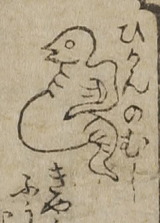

病気；ビョウキ，虫；ムシ，ひかん；ヒカン

ひかんの虫。鳥の様な頭部、長い前足、膨れた腹部に尾がつながる。
出典：親書誌：U426_nichibunken_0017：セメンエン；セメンエン／日付：2006／資源識別子：U426_nichibunken_0017_0003_0000
Copyright (c)2010- International Research Center for Japanese Studies, Kyoto, Japan. All rights reserved.